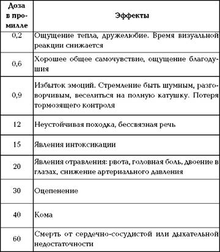

Как именно алкоголь убивает человека?

Механизмы зарождения и становления алкогольной зависимости на сегодняшний день досконально не изучены. Изначально считалось, что само появление зависимости напрямую относится к отклонениям в группировке химических веществ в мозге. Однако в сопоставлении с опытом данная теория подтвердилась не полностью. Как недавно выяснилось, кроме изменения соотношения химических веществ мозга, происходит перестройка его структуры и электрической активности. И именно эти изменения приводят к установлению стойкой алкогольной зависимости. При регулярном приеме алкоголя клетка, пытаясь избавиться от большого количества ацетальдегида, видоизменяет его в уксус. При данной стадии течения возникает толерантность – независимо от количества и качества выпитого спиртного человек не чувствует опьянения. Эта стадия является предвестником заболевания. Клетка научилась так быстро выводить алкоголь, что заодно выводит и природный, и синтезируемый алкоголь. Человек пьет еще больше, и клетка перестает синтезировать его вообще. А тут вдруг индивид не употребил уже привычного алкоголя, и клетка не получила спирта вообще. Клетка задыхается, начинает постепенно погибать, а без спирта все равно не может. Вот так.
Давайте представим себе типичного алкоголика. Больной производит впечатление лица неопределенного возраста со всклоченной, давно не мытой шевелюрой. Кожа на лице равномерного розоватого цвета (что в сочетании с отечностью производит впечатление распаренности), но с годами становится покрасневшей. При воздержании от приема спиртного краснота постепенно исчезает, на фоне бледности проступают сосудистые «звездочки» на крыльях носа, щеках, шее, верхней части груди. Тургор кожи утрачен. Мышцы вялые, их тонус восстанавливается только при приеме спиртного. Расслабленность круговой мышцы рта придает вид мимической слабости, волевой распущенности. Но вместе с этим отмечается живой мимический рефлекс при упоминании о спиртном – улыбка с облизыванием, причмокиванием и проглатыванием слюны. Часто отмечаются небрежность в одежде, нечистоплотность. Конечно, когда же заниматься своим внешним видом, если все мысли и поступки направлены только на поиск спиртного! Итак, что же происходит, когда человек принял алкоголь?
Он выпивает рюмку-другую, и через несколько минут наступает облегчение в виде улучшения общего самочувствия, прилива сил. Больной возбужден, болтлив, доволен собой и окружающими. Несколько следующих рюмок могут сменить благодушно-приподнятое настроение на обидчивость, раздражительность, гневливость. Заметно нарушается координация движений, появляется невозможность выговаривать слова. Такие видимые симптомы опьянения – результат отравления головного мозга алкоголем, который, попадая в организм, легко усваивается кровью и распространяется по всему организму, отравляя желудочно-кишечный тракт. При обильном снабжении кровью головного мозга алкоголь попадает сюда довольно быстро и жадно поглощается жировыми веществами, содержащимися в клетках мозга. Задерживаясь здесь, он поражает мозг своим токсическим воздействием до полного окисления.
Алкоголь часто называют стимулирующим средством. Это неправильно, поскольку алкоголь является специфическим ядом и на центральную нервную систему он действует не возбуждающе, а подавляюще. Даже небольшая доза спиртного угнетает процессы внутреннего торможения, вследствие чего и появляются некоторая развязность, несдержанность. Угнетение активности двигательных центров мозга, т. е. полная потеря человеком ориентации, происходит при очень большом содержании алкоголя в крови. Кроме всего прочего, спиртное способствует ухудшению зрения, поэтому при рассматривании предметов маленького размера человеку необходимо более сильное освещение. Неблагоприятное влияние спиртное оказывает и на вкусовые рецепторы, слуховые функции. Человек становится невнимательным к внешним раздражителям; увеличивается число ошибок при решении простейших арифметических задач. Сосуды головного мозга тоже страдают от алкогольного воздействия, что характеризуется в начале опьянения их расширением, замедлением в них кровотока, что препятствует быстрому оттоку крови из головного мозга. Впоследствии, когда в крови, кроме алкоголя, накапливаются вредные продукты его неполного распада, происходит резкий спазм (сужение) сосудов. Поэтому при опьянении довольно часто (и особенно у людей преклонного возраста) развиваются инсульты, не проходящие бесследно. Столь тяжелые испытания, переживаемые нервными клетками алкоголика, способствуют их раннему износу, наблюдается их массовая гибель. Происходит распадение и исчезновение нервных волокон. Изменения структуры мозга, к которым привела многолетняя алкогольная интоксикация, почти необратимы, и даже после длительного неупотребления спиртных напитков они сохраняются. Примерно 20% любого алкогольного напитка всасывается в желудке, а 80% – в кишечнике. В дальнейшем алкоголь распространяется кровотоком по организму. Печень усваивает алкоголь с регулярным постоянством, составляющим около 0,5 л пива в час. В итоге этот процесс охватывает примерно 90% алкоголя, после чего образуются конечные продукты – углекислый газ и вода. Оставшиеся 10% выводятся через легкие и с потом. При нормальных условиях алкоголь способствует протеканию в организме четырех процессов.
1. Происходит обеспечение организма энергией.
2. Алкоголь действует на центральную нервную систему, что приводит к снижению реактивности и работоспособности.
3. Алкоголь оказывает сильное мочегонное действие, что при больших дозах принятого спиртного приводит к обезвоживанию организма.
4. Спиртное неблагоприятно влияет на работу печени, часть которой просто отказывает после отравления организма алкоголем, но она обычно полностью восстанавливается спустя несколько дней.
